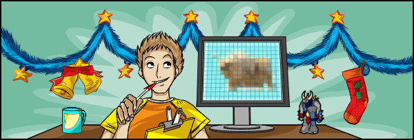
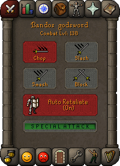

")
Summoning: Part 3 - Testing

Summoning: Part 3 - Testing
It's time for the third part of the Summoning Development Diary, where we'll be looking at how Summoning was polished up to as high a standard as possible before its release. This task falls to the Quality Assurance (QA) team to test it for bugs and the RuneScape Content team to balance it.
A familiar feeling
Typically, the role of a games tester is to repeatedly play through one piece of content to find any bugs, then to communicate these to the developer so they can be fixed. It can get repetitive but it's a rewarding job, especially if it's for a game you were playing long before becoming a tester of it, which is true of a lot of the members of QA (one is ranked within the top 500 players). With an update as large as Summoning, however, things were a little different for RuneScape's QA team. "For small updates, it makes sense to only test them after they've been developed, but skills are large and have a huge impact on the game. We were involved from the very beginning, giving feedback on the skill's concept, how it would work with the current game and with future planned content," says QA's Mod Kevin.
"One of the guys discovered a bug where you could obtain multiple familiars at the same time. He had an army of about thirty of them following him around, attacking everything his character attacked."
 Mod Ben L
Mod Ben L
Quality Assurance
The first obvious concern was that, with such a wide variety of pets and familiars, more players were going to have a follower out at the same time, which could have lead to technical problems like slowdown. This was addressed during the concept stage, by designing the skill to minimise the number of players who will have followers out at the same time. For instance, there is a time limit on how long a familiar will stay summoned (which increases as you train the skill), Summoning energy runs out and needs to be recharged at an obelisk and certain pets can only be tamed at higher Summoning levels.
One of the ways something like this is tested is by using multi-tests. This is where a few members of the QA team log in and play the same content at the same time. It all worked quite smoothly, but one of the multi-tests did throw up an amusing bug. Mod Ben L, Head of RuneScape QA, says, "One of the guys discovered a bug where you could obtain multiple familiars at the same time. He had an army of about thirty of them following him around, attacking everything his character attacked." Good job we caught it!
Level up
Another way in which Summoning is going to affect RuneScape is how it interacts with other skills and combat. It was up to RuneScape Content to balance Summoning to make sure it does not make gaining XP in other skills too easy or disrupt the combat triangle. "Summoning gives you the potential to be more powerful in combat, so it's only right that it contributes to your Combat level, which is a guide to your character's overall combat ability," says RuneScape Content's Paul.
Summoning familiars are there to support you, whichever combat class your character is using, so we decided it made sense for them to add to your Combat level in a similar way to how Prayer does. Adding Summoning to the Combat level calculation means that the maximum will increase from 126 up to 138. It's a new goal for anyone who already has a level 126 character, or just for anyone who enjoys training skills.

Will you master Summoning and get your Combat level up to 138?
Deciding that Summoning would add to a character's Combat level was quite easy, but there were repercussions for the rest of the game. Does this new Combat level affect Slayer assignments? What will this mean for Bounty Hunter, Clan Wars and the Duel Arena? How will future player-vs-player content be affected? How is Summoning balanced with combat? As you can imagine, balancing Summoning against all these factors is difficult. Some of the things it has led to include are 'No Summoning' duels, a Protect from Summoning prayer and the relative cost of the skill.
The hard sell
"If, by the end of the Wolf Whistle quest, you understand how Summoning functions, then we've succeeded. The fact that it was developed by an excellent quest writer helps."
Mod Mark
RuneScape Content
While the skill is neither cheap or expensive to train, high-level familiars will obviously cost more to summon than low-level ones, so players will have to weigh the benefits of each familiar against the cost of summoning them. Also, the skill will not initially be a fast skill to train. Paul says, "You need some skills to be easy to train and some that are hard." Summoning leans more towards the hard end of the scale, but it's well worth the effort. Everyone will be able to get something out of it – whether that's the skillcape at level 99, cockatrices at level 43 or just pet dogs at level 1.
Compared to some of RuneScape's other skills, Summoning is one of the more complex. Mod Mark, Senior Creative Designer, says, "If players don't understand something straight away, they may just dismiss it. If that happens it's our fault, not the players. That's why Summoning had to have a quest." This quest, titled Wolf Whistle, will act as both an introduction and a tutorial.
"If, by the end of the Wolf Whistle quest, you understand how Summoning functions, then we've succeeded. The fact that it was developed by an excellent quest writer helps." Indeed, it's not just a tutorial, it's an amusing quest in its own right, as you'd expect from Mod Wilson (whose previous quests include Rag and Bone Man, Cabin Fever, Rum Deal and Great Brain Robbery).

Inventory images for the five pets we've mentioned or hinted at so far.
There's a lot of overlap between the different development stages of something as large as a skill. Parts of it were being coded while the graphics were still being worked on; some of it went into testing while the rest was being developed; the Game Guide articles were being written while the skill was being balanced; and we began dropping hints about the skill before it was even finished.
Concluded in: Summoning: Part 4 - Release

More articles in
Development Diaries
|
|